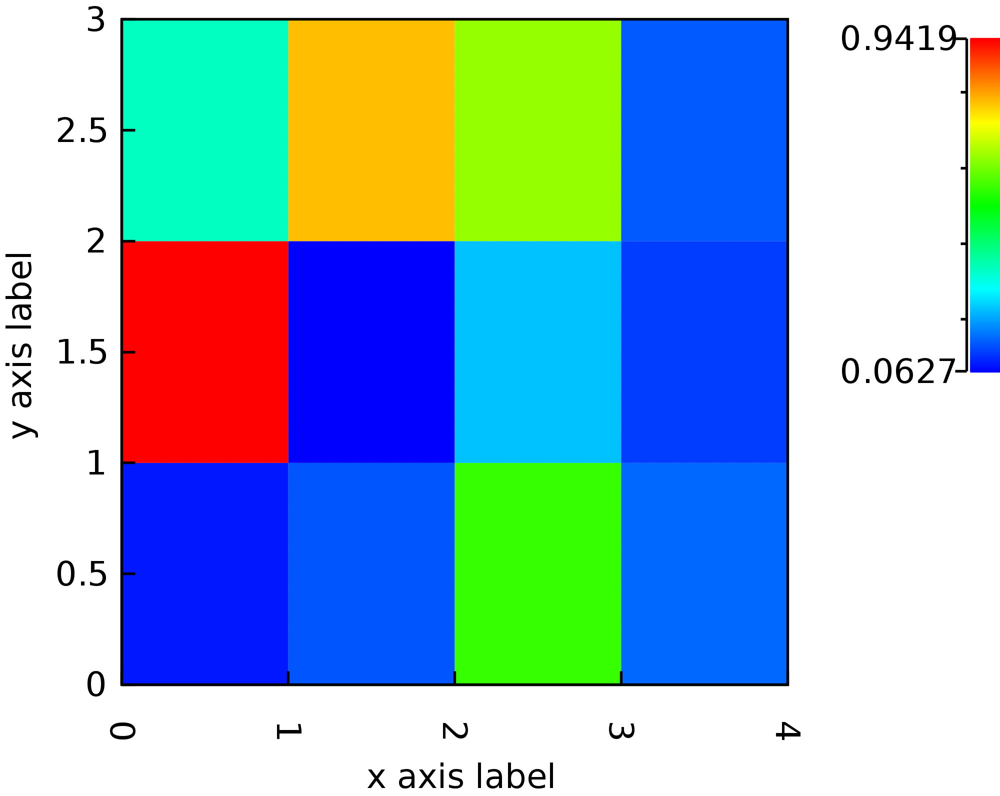
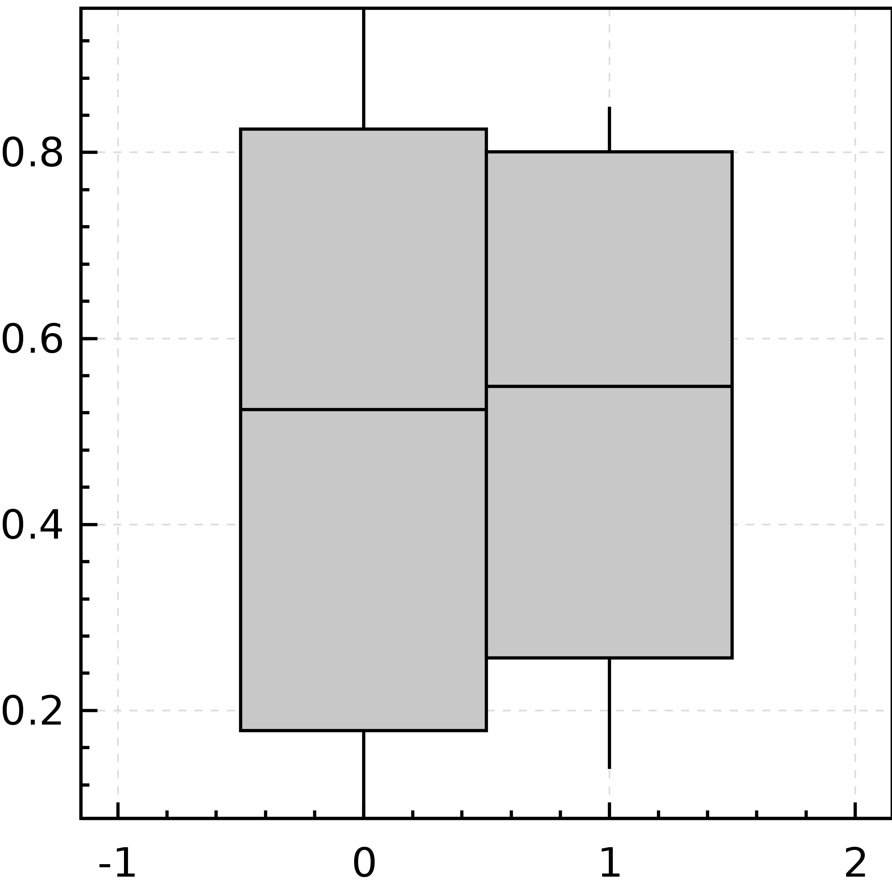

Creating a plot usually involves 1) getting some data, 2) describing the plot, 3) producing some output in a serialized image format or in a graphics context.
I. Data sources #
nspl plotting routines take data from org.nspl.data.DataSource subtypes. A DataSource is a lazy collection of vectors of doubles, with definition:
trait DataSource {
def iterator: Iterator[Row]
}
trait Row {
def apply(i: Int): Double
def label: String
}
For most use cases the import org.nspl._ imports implicit conversions from standard library types like
Seq[(Double,Double)] or tuples of other arity.
There are a few concrete implementations of a DataSource in the org.nspl.data package like DataTable which is a row major matrix of doubles and DataMatrix which is a raster.
Lazyness #
Nspl is lazy in the data sources. The iterator of the rows of a data source is run only when needed and the rows are only kept in memory where absolute necessary. For example, nspl can render to bitmaps or other raster formats (jpg, png) without accumulating the data rows in memory.
Saddle data sources #
Saddle is a data manipulation library for Scala, it provides features similar to R’s data frames or python’s pandas.
The "org.nspl" %% "nspl-saddle" % "0.2.0" module has adapters from Saddle data structures to nspl DataSource.
Once on the class path you can import it with the import org.nspl.saddle._ wildcard import, and then you can use an org.saddle.Frame everywhere where a DataSource is needed.
II. Plotting routines #
nspl’s API separates the definition of the plot from the actual rendering. First a data structures is created which describes the plot, then that structure is interpreted by a renderer.
xyplot #
The most important method in nspl’s API is the xyplot()() method, a factory for descriptions of 2D plots in a Cartesian coordinate system. It takes two parameter lists: the first parameter list is for data sources and data renderers, the second parameter list is for global plot parameters.
Its signature is roughly:
def xyplot[F: FC](data: (DataSource, List[DataRenderer], LegendConfig)*)(
xlog: Boolean = false,
ylog: Boolean = false,
main: String = "",
xlab: String = "",
ylab: String = "",
.. many other global plot parameters ..)
In the first parameter list of xyplot we give one or more data sources each with zero or more DataRenderer.
A DataRenderer is visual representation of a row or rows e.g. a point, a line segment, a horizontal or vertical bar, a boxplot, etc. A single data source may have multiple data renderes e.g. both a point and a line segment.
For the full list of data renderers see the methods in the
Renderers trait.
The third element of the triple controls whether the data source is included in the legend or not.
In the below example we have a single data source, each row is plotted as a series of consecutive line segments and also as a point. Finally, the data source is included in the legend.
import org.nspl._
import org.nspl.awtrenderer._
val someData =
List(
0d -> 0d,
1d -> 1d,
2d -> 1d,
3d -> 0d
)
val plot = xyplot((someData , List(point(),line()), InLegend("series 1")))(
par(xlab="x axis label",
ylab="y axis label")
)
renderToByteArray(plot, width=2000)
The above code block produces this plot:
rasterplot #
There is a more specialized factory method for creating a plot from raster (bitmap) type data e.g. to visualize a matrix diretly or draw images. It takes a DataSource with at least three columns, ie. a list of triples: the x, y coordinates and the value. As this is a bitmap the coordinates must fall onto round integers (or they will be rounded down), even though they are stored as doubles.
An example with a sparse coordinate list format:
import org.nspl._
import org.nspl.awtrenderer._
val sparseMatrix =
List(
(0d, 0d, 1d),
(1d, 1d, 1d),
(2d, 2d, 1d),
)
val plot2 = rasterplot(sparseMatrix)(par(
xlab="x axis label",
ylab="y axis label"
))
renderToByteArray(plot2.build, width=2000)
The above code block produces this plot: An example with a dense matrix:
import org.nspl._
import org.nspl.awtrenderer._
import org.nspl.data.DataMatrix
import scala.util.Random.nextDouble
val denseMatrix = new DataMatrix(
rows = Array.fill(12)(nextDouble()), numCols = 4, numRows = 3)
val plot3 = rasterplot(denseMatrix)(par(
xlab="x axis label",
ylab="y axis label"
))
renderToByteArray(plot3.build, width=2000)
The above code block produces this plot: 
Box and whiskers plot #
For a box plot you have to first summarize the data distribution into 5 values: median, 25th and 75th percentiles, minimum and maximum.
nspl has helper methods to achieve that summary and has a a boxwhisker() data renderer to actually draw the box figure from the summary which is a DataSource with 5 columns.
There is also a factory method which does all these in one call:
import org.nspl._
import org.nspl.awtrenderer._
import org.nspl.data.DataMatrix
import scala.util.Random.nextDouble
val randomData1 = 0 until 10 map (_ => nextDouble())
val randomData2 = 0 until 10 map (_ => nextDouble())
val randomData = randomData1 zip randomData2
val plotBx = boxplot(randomData)(par())
renderToByteArray(plotBx.build, width=2000)
The above code block produces this plot:  Note, that these box and whiskers plots do not display individual outlier elements, neither the mean. They display the median, the interquartile range and the minimum and maximum.
III. Output formats #
Nspl has different modules depending on the supported graphic context or platform. These modules have methods which take the data structure describing the plot and produce a platform dependent output, e.g. a file, a byte array, or draw to a canvas.
For example, as demonstrated in the previous examples, to produce a byte array with a PNG encoded image one can use the org.nspl.awtrenderer.renderToByteArray method:
import org.nspl._
import org.nspl.awtrenderer._
val plot = xyplot(..)(..)
renderToByteArray(plot.build, width=2000)
Similarly, there is an org.nspl.canvasrenderer.render method which returns a new canvas DOM node:
import org.nspl._
import org.nspl.canvasrenderer._
val plot = xyplot(..)(..)
val (canvas, _) = render(plot)